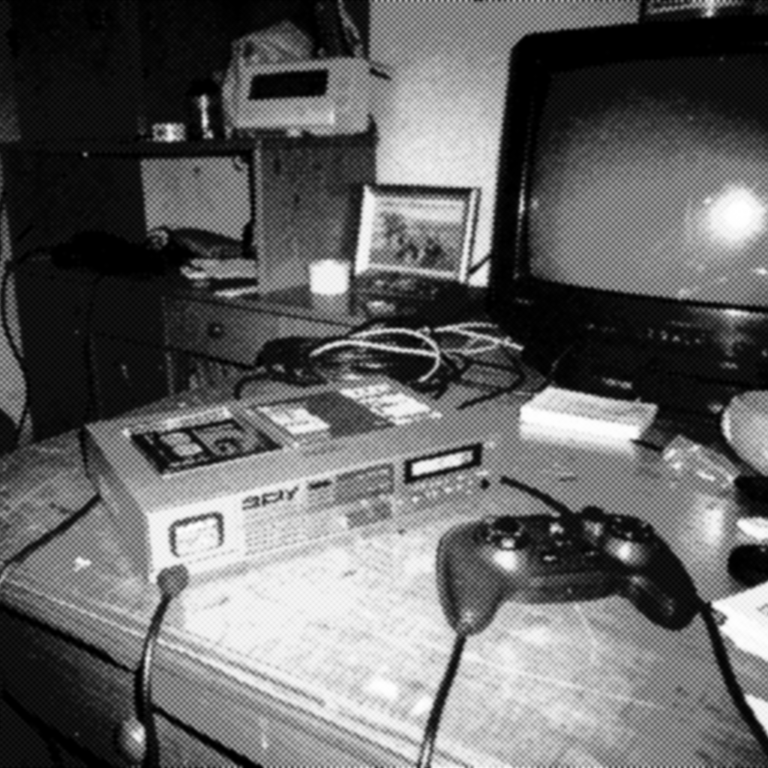

Медиа и развлечения
Игровая приставка Dendy
Dendy, клон NES конца 1980–1990-х, стала символом первых домашних игровых развлечений в России и странах СНГ.
Год: 1992
Устройство: Dendy
Тип: Звук запуска (startup)
Длительность: 2-3 секунды
Категория: Медиа и развлечения
